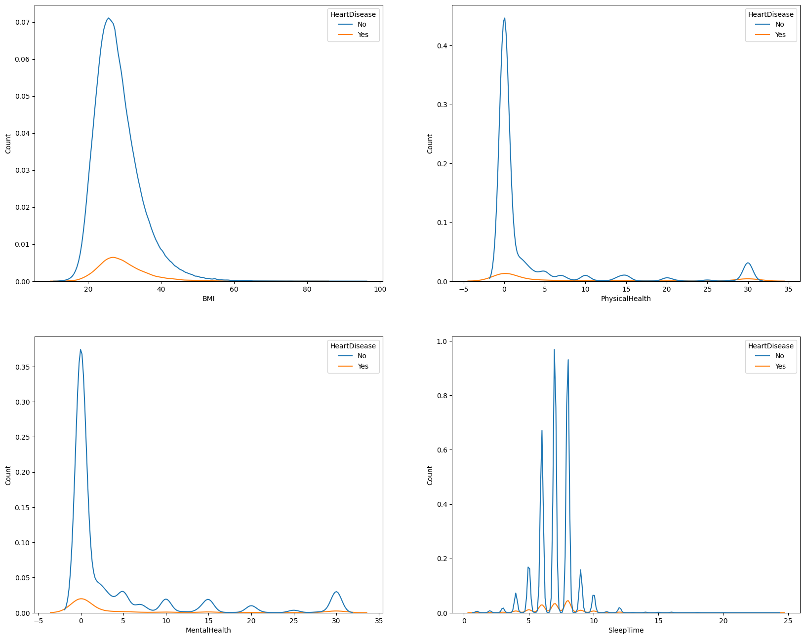
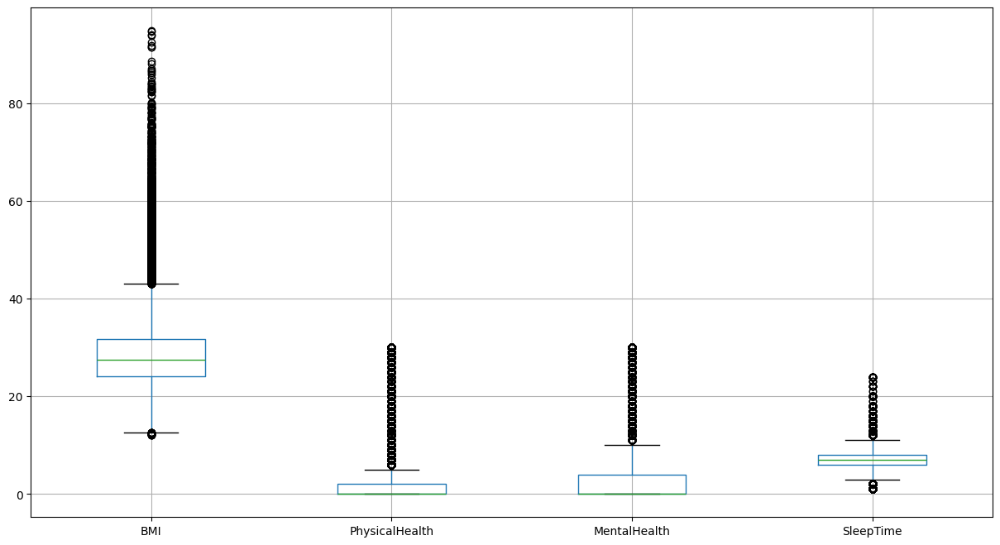
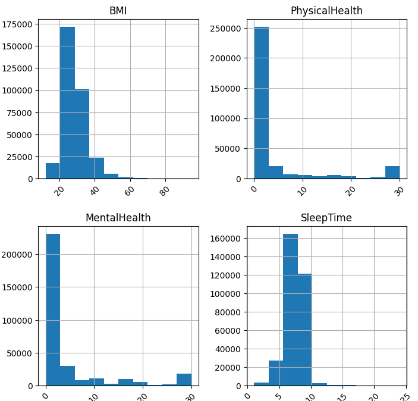

The most accurate model was the worst one to ship. On a target where 92% of patients are healthy, accuracy rewards a model for staying silent — so the selection metric had to change before the modelling did.
Cardiovascular disease is largely preventable when caught early, but screening every adult in a population is not economically possible. The question is therefore not who has heart disease — it is who is worth a clinician's time.
The dataset is the CDC's annual health survey: 319,795 respondents across 18 variables, mixing behavioural, demographic and self-reported clinical signals — BMI, smoking and alcohol use, stroke history, days of poor physical and mental health, difficulty walking, age band, diabetes status, physical activity, general health rating and sleep duration.
That makes it a triage dataset rather than a diagnostic one. Nothing here is a blood panel or an ECG. The realistic goal is to narrow a population down to a group worth testing properly, which sets the bar for what a useful model looks like.
The target splits 10.68 to 1 — roughly 92% of respondents report no heart disease. That ratio has an uncomfortable consequence:
A model that predicts “no heart disease” for every single person scores about 91% accuracy on this data — while finding nobody at all. Any model reporting accuracy in the high eighties has to be checked against that floor before the number means anything.
So accuracy was ruled out as a selection metric at the start. The metric that actually matters for screening is recall on the positive class: of the people who do have heart disease, how many did we flag? A missed case walks out of the clinic undiagnosed. A false alarm costs one follow-up test. Those are not symmetric errors, and the metric should not pretend they are.

The work split into three stages. Each one was constrained by the same principle: do not let a preprocessing choice quietly inflate the final numbers.
Duplicates removed, then outliers handled per-feature rather than with one blanket rule:
Label encoding across fourteen categorical variables, then standardisation of the continuous features so no single variable dominated on magnitude alone.
The two health-day variables were log-transformed rather than trimmed, because the heavy right tail is real signal — people genuinely do report thirty bad days — not measurement error.
Rather than defaulting to SMOTE, five strategies were evaluated against each other:
Logistic Regression, Decision Tree and Random Forest — deliberately spanning a linear baseline, a single interpretable tree and an ensemble, so the comparison would show whether added complexity was buying anything real.

Random Forest won on accuracy by a wide margin and lost on the only metric that mattered. Plotted side by side, the trade-off is unambiguous:
| Model | Sampling | Accuracy | Recall (class 1) | Precision (class 0) | F1 (class 1) |
|---|---|---|---|---|---|
| Logistic Regression | Random under-sampling | 0.7328 | 0.77 | 0.97 | 0.33 |
| Decision Tree | Random over-sampling | 0.7330 | 0.70 | 0.96 | 0.31 |
| Random Forest | Random over-sampling | 0.8874 | 0.20 | 0.93 | — |
Random Forest caught one in five. It scored fifteen accuracy points above Logistic Regression while finding 20% of at-risk patients against 77%. On a screening problem that is not a close call — the ensemble was learning to agree with the majority class, which is exactly what the imbalance rewards.
Random under-sampling produced the strongest positive-class recall across model families, which is consistent with what it does: it removes the majority-class mass that was drowning the signal, at the cost of throwing away data. Here that trade was worth taking.
The honest caveat: F1 on the positive class sits at 0.33, which means precision is low — most flagged patients will not have heart disease. For a triage step that routes people to a cheap follow-up test, that is an acceptable cost. For anything that drives treatment, it is not. The model is fit for the first job and unfit for the second.
Logistic Regression with random under-sampling was selected — the lowest-accuracy model of the three, and the only one that did the job it was built for.
Choosing it also meant accepting a simpler model than the ensemble, which turned out to be an advantage rather than a concession. Logistic Regression exposes its coefficients, so a clinician can see which factors pushed a patient over the line. On a screening tool that someone has to trust and act on, an explainable model beats an opaque one with better paper metrics.

The model answers the question it was given. Several things would need to change before it could answer a harder one.
On a heavily imbalanced target, precision–recall AUC describes the whole trade-off curve rather than one arbitrary threshold. F1 at 0.33 is a single point on that curve and undersells where the model is genuinely useful.
Every number here comes from one survey year of one country's population. Generalisability is asserted, not demonstrated. A second dataset from a different source is the only way to know whether this holds.
The models were compared at default hyperparameters. Random Forest in particular is likely to improve with class weighting and depth limits — the comparison is fair, but it is not the ceiling.
The current features are treated independently, but cardiovascular risk compounds — age with diabetes with smoking is not the sum of its parts. Interaction terms are the obvious next lever.
The broader lesson transfers past this dataset: on any rare-event problem — fraud, churn, defects, disease — the default metric will quietly reward a model for predicting nothing happens. Establishing the majority-class baseline before reporting a single result is what separates a number from a finding.